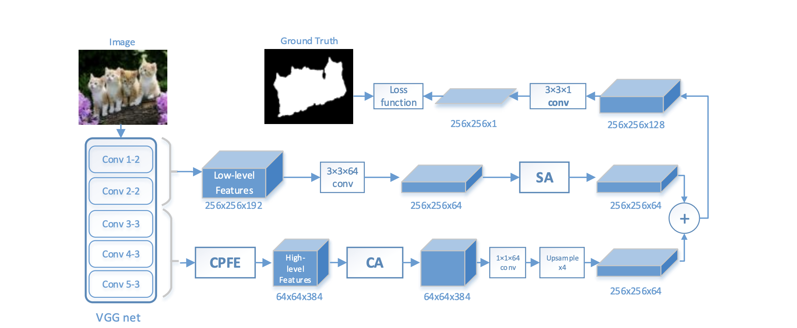
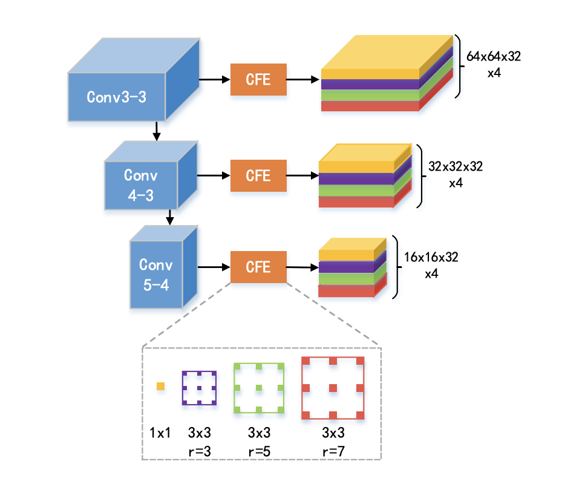

本文创新的提出了新的高层特征融合方法，并针对高低级特征分别引入了不同的注意力机制，最后提出了新的损失函数以增强对边界的区分能力，网络结构如下图所示。

作者首先指出了先前工作的不足：池化层会降低特征图尺度，模糊图像边缘，并试图通过解决这个问题来提高准确率。
网络结构以ImageNet预训练的VGG16为特征提取网络，五层中较浅的两层视为低级特征，后三层视为高级特征并通过CPFE（context-aware pyramid feature extraction）模块进行特征融合，CPFE的具体结构如所示

对于每一层特征图，模块使用了三个不同尺寸的空洞卷积层，以及一个1*1卷积层提取全局信息，并最终在通道方向上拼接后作为模块输出，试图在一定程度上模仿sift算法提取尺度不变特征。本文中该模块只对高级特征进行了处理。
之后，作者引入了注意力机制，分别对高级和低级特征使用了CA（Channel-wise attention）和SA(Spacial attention)处理，对应网络结构图中的CA与SA模块。CA提供了对高级特征图每一个channel进行权重学习的能力，重点在于给特征图每一层赋予权重，而SA则可在高级特征的指导下筛选低级特征，重点在于特征筛选。
损失函数部分作者创新地运用拉普拉斯算子构造损失函数，在对图像求梯度后再次运用交叉熵损失函数，可和增强对边界的学习能力，从而提高魔性的边界区分准确率，其和传统的交叉熵加权相加后作为最终的损失函数。
该模型在DUTS-test、ECSSD、HKU-IS、PASCAL-S、DUT-OMRON数据集上进行了测试。